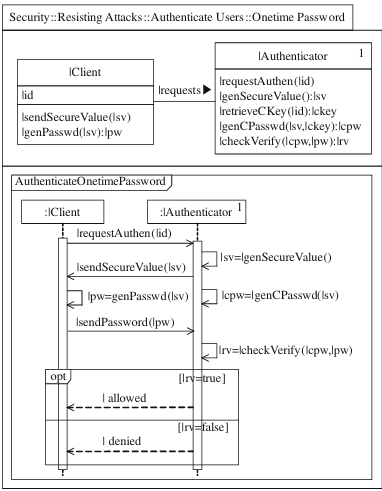

<!DOCTYPE html>
<html lang="fr">
<head>
    <meta charset="UTF-8">
    <meta name="viewport" content="width=device-width, initial-scale=1.0">
    <title>Guide & Documentation</title>
    <script src="https://cdn.tailwindcss.com"></script>
</head>
<body class="bg-[#232323] text-white">

    <div class="max-w-5xl mx-auto p-6">
        <h1 class="text-3xl font-bold text-center mb-6 text-[#e3b70a]">📖 Guide & Documentation</h1>

        <!-- Introduction -->
        <section class="mb-8">
            <h2 class="text-2xl font-semibold mb-4 text-[#e3b70a]">📌 Introduction</h2>
            <p class="text-gray-300">
                Ce guide fournit une explication détaillée des concepts utilisés dans l'analyse des traces 
                et la détection des tactiques architecturales.
            </p>
        </section>

        <!-- Terminologie -->
        <section class="mb-8">
            <h2 class="text-2xl font-semibold mb-4 text-[#e3b70a]">🔍 Terminologie</h2>
            <ul class="list-disc list-inside text-gray-300">
                <li><b>Trace d'exécution :</b> Séquence d'appels entre les composants d'un logiciel.</li>
                <li><b>Tactique Architecturale :</b> Stratégie utilisée pour répondre à un besoin non-fonctionnel.</li>
                <li><b>Grammaire XPG :</b> Langage utilisé pour décrire la structure syntaxique d'une trace.</li>
                <li><b>Diagramme de Séquence UML :</b> Représentation graphique des interactions entre objets.</li>
            </ul>
        </section>


<script>
    function toggleFAQ(index) {
        const answers = document.querySelectorAll(".faq-answer");
        answers[index].classList.toggle("hidden");
    }
</script>

        <!-- Diagrammes de Séquence UML -->
        <section class="mb-8">
            <h2 class="text-2xl font-semibold mb-4 text-[#e3b70a]">📊 Diagrammes de Séquence UML</h2>
            <p class="text-gray-300">Les diagrammes UML permettent de visualiser les interactions entre les composants.</p>
            
                
            
        </section>


        <!-- Grammaire XPG -->
        <section class="mb-8">
            <h2 class="text-2xl font-semibold mb-4 text-[#e3b70a]">📜 Grammaire XPG</h2>
            <p class="text-gray-300 mb-4">La grammaire XPG permet d'analyser une trace et d'en extraire des motifs spécifiques.</p>
            <div class="bg-gray-700 p-4 rounded-md text-gray-300 font-mono">
                <pre>
  Exemple:

(1) PingEchoPattern → MethodInv <same_caller, call+1> OptBlock MethodInv'
(2) OptBlock → epsilon (cela veux dire que le bloc peut ne pas exister, il est optionnel)
(3) OptBlock → MethodInv'' <call, same_callee> MethodInv'''
(4) MethodInv → Caller: OBJ.METHOD_SIGNATURE Callee: OBJ'.METHOD_SIGNATURE'
Δ: { MethodInv_caller = OBJ; MethodInv_callee = OBJ';
 MethodInv_method_caller = METHOD_SIGNATURE;
 MethodInv_method_callee = METHOD_SIGNATURE'}
                </pre>
            </div>
        </section>

<!-- Traces d'Exécution -->
<section class="mb-8">
    <h2 class="text-2xl font-semibold mb-4 text-[#e3b70a]">📌 Traces d'Exécution</h2>

    <!-- Définition -->
    <p class="text-gray-300 mb-4">
        Une trace d'exécution est une séquence d'événements capturant l'interaction entre les composants d'un système. 
        Elle permet d'analyser le comportement du programme en temps réel et de détecter d'éventuelles anomalies.
    </p>

    <!-- Comment interpréter une trace -->
    <h3 class="text-xl font-semibold mb-2 text-[#e3b70a]">🧐 Comment interpréter une trace ?</h3>
    <p class="text-gray-300 mb-4">
        L'interprétation d'une trace repose sur l'analyse des relations entre les appels de méthode. 
        On identifie qui appelle qui, quelles méthodes sont invoquées et dans quel ordre.
    </p>

    <!-- Exemple de trace -->
    <h3 class="text-xl font-semibold mb-2 text-[#e3b70a]">📝 Exemple de trace CALLER/METHOD/CALLEE</h3>
    <div class="bg-gray-700 p-4 rounded-md text-gray-300 font-mono">
        <pre>
CALLER: UserController, METHOD: login, CALLEE: AuthService;
CALLER: AuthService, METHOD: validateUser, CALLEE: Database;
CALLER: Database, METHOD: checkCredentials, CALLEE: null;
        </pre>
    </div>

</section>


<!-- Tactiques Architecturales -->
<section class="mb-8">
    <h2 class="text-2xl font-semibold mb-4 text-[#e3b70a]">🏗️ Tactiques Architecturales</h2>
    <div class="space-y-4">
        
        <div class="bg-gray-700 p-4 rounded-md">
            <button class="faq-question w-full text-left font-semibold text-[#ffffff]" onclick="toggleFAQ(0)">
                 📡 Ping Echo
            </button>
            <div class="faq-answer hidden mt-2 text-gray-300">
                <p>
                    La tactique Ping Echo permet de vérifier la disponibilité et la réactivité d’un service ou d’un composant système.  
                    Un message "ping" est envoyé à une cible, qui doit répondre avec un message "echo".  
                    Cela est couramment utilisé pour la surveillance des réseaux et des systèmes distribués.
                </p>
                
            </div>
        </div>

        <div class="bg-gray-700 p-4 rounded-md">
            <button class="faq-question w-full text-left font-semibold text-[#ffffff]" onclick="toggleFAQ(1)">
                 🔑 Authorize Users
            </button>
            <div class="faq-answer hidden mt-2 text-gray-300">
                <p>
                    Cette tactique garantit que seuls les utilisateurs autorisés peuvent accéder aux ressources sécurisées d’un système.  
                    Elle repose sur des mécanismes d'authentification (mots de passe, biométrie, tokens) et de contrôle d'accès (rôles, permissions).  
                    Elle est essentielle pour assurer la confidentialité et la sécurité des données sensibles.
                </p>
                
            </div>
        </div>

        <div class="bg-gray-700 p-4 rounded-md">
            <button class="faq-question w-full text-left font-semibold text-[#ffffff]" onclick="toggleFAQ(2)">
                 📀 Maintain Multiple Copies
            </button>
            <div class="faq-answer hidden mt-2 text-gray-300">
                <p>
                    Cette tactique consiste à stocker plusieurs copies des données afin d'améliorer la fiabilité et la tolérance aux pannes.  
                    Elle est utilisée dans les systèmes de sauvegarde, les bases de données répliquées et les architectures de stockage distribuées.  
                    Cela permet de récupérer rapidement les informations en cas de défaillance d'un serveur ou d'un disque dur.
                </p>
                
            </div>
        </div>

        <div class="bg-gray-700 p-4 rounded-md">
            <button class="faq-question w-full text-left font-semibold text-[#ffffff]" onclick="toggleFAQ(3)">
                 🗃️ Maintain Data Confidentiality
            </button>
            <div class="faq-answer hidden mt-2 text-gray-300">
                <p>
                    Cette tactique assure l'intégrité et la disponibilité des données en appliquant des mécanismes de validation et de correction d’erreurs.  
                    Elle est utilisée pour prévenir la corruption des données et garantir leur exactitude dans le temps.  
                    Des techniques comme les checksums, le versionnement et la redondance des données sont souvent employées.
                </p>
                
            </div>
        </div>
        <div class="bg-gray-700 p-4 rounded-md">
            <button class="faq-question w-full text-left font-semibold text-[#ffffff]" onclick="toggleFAQ(4)">
                🛡️ Onetime Password
            </button>
            <div class="faq-answer hidden mt-2 text-gray-300">
                <p>
                    La tactique One-Time Password (OTP) est une méthode de sécurité utilisée pour authentifier un utilisateur en générant un mot de passe temporaire et unique à chaque connexion. Contrairement aux mots de passe statiques, un OTP ne peut être utilisé qu'une seule fois, réduisant ainsi le risque de vol ou de réutilisation frauduleuse.
                </p>
                
            </div>
        </div>
        <div class="bg-gray-700 p-4 rounded-md">
            <button class="faq-question w-full text-left font-semibold text-[#ffffff]" onclick="toggleFAQ(5)">
                🔐 ID/Password & Maintain Confidentiality
            </button>
            <div class="faq-answer hidden mt-2 text-gray-300">
                <p>
                    L’association de l’authentification par ID/Mot de Passe et de la protection de la confidentialité des données permet de renforcer la sécurité en garantissant à la fois le contrôle d’accès et la protection des informations sensibles.
                </p>
                
            </div>
        </div>
       
        </div>

    </div>
</section>
<!-- JavaCC et Analyse Syntaxique -->
<section class="mb-8">
    
    <h2 class="text-2xl font-semibold mb-4 text-[#e3b70a]"> JavaCC et Analyse Syntaxique</h2>
   </h3>Cette section explique pourquoi JavaCC est un choix pertinent pour l'analyse syntaxique et comment il permet d'automatiser la détection des tactiques architecturales dans les traces d'exécution.</h3>
   

   <h3 class="text-xl font-semibold mb-2 text-[#e3b70a]">🔍 Présentation de JavaCC</h3>
</h3>→ JavaCC (Java Compiler Compiler) est un générateur d'analyseurs syntaxiques pour Java.<br>
→ Il permet de définir une grammaire qui décrit la structure des données à analyser.<br>
→ Très utilisé pour construire des parseurs, notamment pour analyser du code ou des logs.</h3>

<h3 class="text-xl font-semibold mb-2 text-[#e3b70a]">🛠 Explication du parseur utilisé pour l’analyse des traces
</h3>
</h3>→ Dans ce projet, JavaCC est utilisé pour analyser les traces d’exécution et identifier des motifs spécifiques.<br>
→ Le parseur transforme la séquence d’appels (CALLER → METHOD → CALLEE) en un ensemble structuré de données.
<br>
→ Il permet d’extraire automatiquement des informations utiles sans intervention manuelle.
</h3>

</section>
<!-- Références et Ressources -->
<section class="mb-8">
    <h2 class="text-2xl font-semibold mb-4 text-[#e3b70a]">🟦 Références et Ressources</h2>

    <div class="space-y-4">
        <div class="bg-gray-700 p-4 rounded-md">
            <button class="faq-question w-full text-left font-semibold text-[#ffffff]" onclick="toggleFAQ(0)">
                ▶️ 📌 Liens et articles pour aller plus loin
            </button>
            <div class="faq-answer hidden mt-2 text-gray-300">
                <h3 class="font-semibold text-[#e3b70a] mt-2">📖 Documentation JavaCC</h3>
                <ul class="list-disc list-inside">
                    <li><a href="https://javacc.org/" target="_blank" class="text-blue-400 hover:underline">Site officiel de JavaCC</a></li>
                    <li><a href="#" class="text-blue-400 hover:underline">Tutoriels et exemples JavaCC</a></li>
                </ul>

                <h3 class="font-semibold text-[#e3b70a] mt-4">📚 Exemples de tactiques dans la littérature</h3>
                <ul class="list-disc list-inside">
                    <li><a href="#" class="text-blue-400 hover:underline">Études de cas sur les tactiques architecturales</a></li>
                    <li><a href="#" class="text-blue-400 hover:underline">Articles académiques sur les tactiques</a></li>
                </ul>

                <h3 class="font-semibold text-[#e3b70a] mt-4">🎓 Tutoriels sur les traces d’exécution</h3>
                <ul class="list-disc list-inside">
                    <li><a href="#" class="text-blue-400 hover:underline">Introduction aux traces d’exécution</a></li>
                    <li><a href="#" class="text-blue-400 hover:underline">Analyse et interprétation des traces</a></li>
                </ul>
            </div>
        </div>
    </div>
</section>


    </div>

    <script>
        function toggleFAQ(index) {
            const answers = document.querySelectorAll(".faq-answer");
            answers[index].classList.toggle("hidden");
        }
    </script>

</body>
</html>

